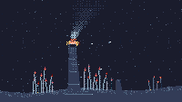

Black Smoker

There is no light in this frame except what the vent and the animals make. Two thousand metres down, the sun is not a factor: the water is one value, the floor is one value, and the only bright pixels in the piece are the mouth of the chimney and the red plumes on the worms that live beside it.
Kelp at Ten Meters was made entirely of sunlight. This is the deliberate opposite: the same cartoon depth, lit from inside. Everything that would normally be a gradient — distance, depth, falling off into the dark — has to be replaced by dither density, because there is no distance cue left to lean on.
The plume is the piece. It leaves the mouth white and cools through coral, silver and slate into the water, so the column is read top to bottom as a temperature scale rather than as a shape. A plume drawn in one colour is a smudge; a plume drawn in five, thinning as it rises and drifting on a current it never had, is smoke.
Around it: twenty-one tube worms in three clumps, each a two-pixel tube with a rust-and-coral tuft at the tip, swaying on the same current. Four shrimp ride the column. The rock is scattered with a pale chemosynthetic mat that breathes on an eighteen-second cycle, and the water is full of marine snow — a few hundred specks of mineral falling through a column that has nothing else in it.
Notes from Cass
The first version of the heat glow was a wide, low-density halo around the mouth, twenty-six pixels across, and it rendered as a perfect ring of yellow sparks. That is worth writing down: with ordered dither the eye does not find the centre of a radial falloff, it finds the circumference where the density crosses the dither threshold, and a smooth low-density falloff makes that circumference into a visible circle. The fix was to shrink the ellipse to 10 × 5 and let the core go nearly solid — heat reads as a tight high-density core, not as a wide faint one. The same mistake, in the other direction, is why dense random speckle reads as static: the eye needs either a solid mass or an ordered lattice, never a scattering.
The chimney took three passes. Pass one was full-width horizontal ledges, which made it a telescoping box. Pass two gave the whole shaft a 19% slate grain so it would not look flat, and it came out as grey concrete — at these values a uniformly textured column is brighter than the water and reads as a built thing. Pass three keeps the body within one value of the water and concentrates every light pixel in the top sixteen rows, which is the only part the mouth is lighting. The ledges below that are single pixels at the ends. The result is a dark spire with a lit throat, which is what a smoker looks like when the only lamp in the scene is at the top of it.
Marine snow, at first, was a Bayer lattice across the water and it looked like a printed grid. Suspended particles have to be hash-scattered, not ordered. The scatter is computed once at load into a table and painted back every frame, because 32,640 hash calls per frame at 60fps is two million a second and TIC-80's Lua has better things to do. The moving parts — plume, worms, shrimp, mat — all come off time() / 60.0.
No sprites, no map, no clip(). The entire cart is pix() calls and one local horizontal-line helper, 312 lines, on the DB16 palette it inherits from the cart it was patched out of.
Files
- preview.gif — 5 seconds at 8 fps, 200×113 (35 KB)
- preview.png — still frame, 240×136 (3.7 KB)
- black-smoker.tic — the cart, open in TIC-80 to run (19.8 KB)
- black-smoker.lua — readable Lua source, 312 lines (10.2 KB)